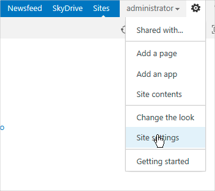
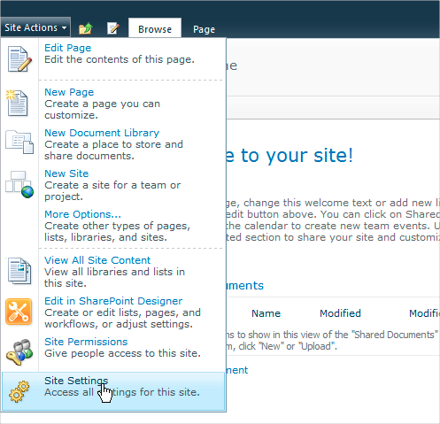
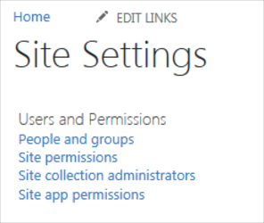
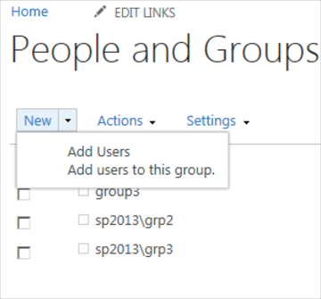
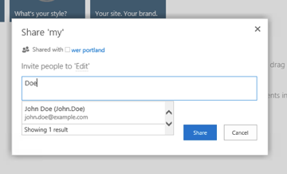
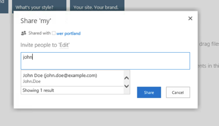
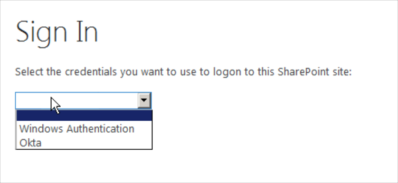
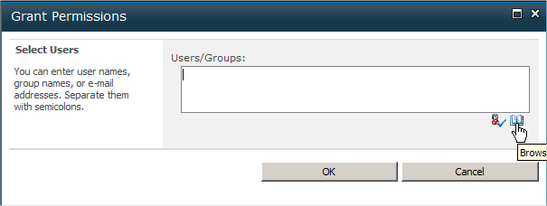

This document describes how to configure WS-Federation in SharePoint On-Premise, and includes the following topics:
You must configure the SharePoint STS to trust the Okta issuer, and map the incoming claims from Okta to claims that your SharePoint applications will use. The following sections describe the steps you must perform to complete this configuration.
Remember to install the SharePoint PowerShell snap-in before attempting to run any SharePoint PowerShell scripts. You can do this with the following PowerShell command:
Add-PSSnapin Microsoft.Sharepoint.Powershell
Select one of the links below to get the instructions for the type of SharePoint STS configuration you intend to perform:
You can either create the Okta trusted token issuer by running the provided Powershell script (see next), or manually (see Creating the Okta Trusted Token Issuer - Step by Step).
We highly recommend using this PowerShell script to set up a new authentication provider. If you subsequently need to add an additional web app, follow the "Add another web app to an existing authentication provider" instructions.
Note: Currently the script is not signed, so you need to change the PowerShell execution policy to Unrestricted before running the script. For more information, see Using the Set-ExecutionPolicy Cmdlet.
To show help:
Get-Help CreateSPTrustedTokenIssuer.ps1
To run the command:
CreateSPTrustedTokenIssuer.ps1 -identifierClaimType $identifierClaimType -certPath $cert -realm $realm -signInURL $signInURL
Where:
$identifierClaimType = UserName, if you are using UserName as the Identifier claim.
$identifierClaimType = Email, if you are using Email as the Identifier claim.
For values of $cert, $realm and $signInURL, refer to Creating a New SharePoint Trusted Root Authority and Creating a New Authentication Provider Using Windows PowerShell.
You can use the -skipCreatingTrustedRootAuthority option to skip creating trusted root authority if it already exists. This defaults to $false.
For example:
.\CreateSPTrustedTokenIssuer.ps1 -identifierClaimType "UserName" -certPath "C:\Okta.cert" -realm "urn:okta:sharepoint:exk5rz1t5f50J447m0h7" -signInURL "https://sp.okta.com/app/sharepoint_onpremise/sso/wsfed/passive" -skipCreatingTrustedRootAuthority
If you choose not to use the provided Powershell script to create an Okta Trusted Token Issuer (see Creating the Okta Trusted Token Issuer using Powershell Script), follow the step by step instructions below:
Okta signs the tokens that it issues with a token signing certificate. You must import an Okta Identity Provider certificate into SharePoint that SharePoint can use to validate the token from Okta.
Download your Okta Identity Provider Certificate from the setup instruction page of your app.
You can use the following PowerShell command to import a certificate from the downloaded .cer file:
$cert = New-Object System.Security.Cryptography.X509Certificates.X509Certificate2("C:\okta.cert ") New-SPTrustedRootAuthority -Name "Token Signing Cert" -Certificate $cert
Note: Follow this step if you are using Email as the identifier claim.
To map the incoming claims from Okta to claims that SharePoint uses, you must create some mapping rules.
The following PowerShell commands show how to create rules to pass through the incoming upn, role and email claims.
$upnClaimMap = New-SPClaimTypeMapping -IncomingClaimType "http://schemas.xmlsoap.org/ws/2005/05/identity/claims/upn" -IncomingClaimTypeDisplayName "UPN" -SameAsIncoming
$roleClaimMap = New-SPClaimTypeMapping -IncomingClaimType "http://schemas.microsoft.com/ws/2008/06/identity/claims/role" -IncomingClaimTypeDisplayName "Role" -SameAsIncoming
$emailClaimMap = New-SPClaimTypeMapping -IncomingClaimType "http://schemas.xmlsoap.org/ws/2005/05/identity/claims/emailaddress" -IncomingClaimTypeDisplayName "EmailAddress" –SameAsIncoming
Note: Skip this step if you are using UserName as the identifier claim.
First, make sure you use a specific encoding character for UserName claim. Each SharePoint farm has a unique encoding character for every claim. We recommend you use the default encoding of 527 unless it is already being used for a different claim.
See Encoding Characters for guidelines.
Run the following command:
New-SPClaimTypeEncoding -EncodingCharacter ([Convert]::ToChar(527)) -ClaimType "http://schemas.okta.com/claims/username" –Force
By default the script above uses 527 as the encoding character. If you want to use a different encoding character, then pass –encodingCharacterCode with the character code to the script above. In case you choose a different encoding character, then make sure that your character is not used in another encoding for a different claim. Also it should be above 500 (0x01F5) and not an uppercase or whitespace character.
Note: Not all characters above 500 works. Here are few examples for you to use: 509, 517, 519 and 525.
Note: Follow this step if you are using UserName as the identifier claim.
To map the incoming claims from Okta to claims that SharePoint uses, you must create some mapping rules.
The following PowerShell commands show how to create rules to pass through the incoming username, upn, role and email claims.
$usernameClaimMap = New-SPClaimTypeMapping -IncomingClaimType "http://schemas.okta.com/claims/username" -IncomingClaimTypeDisplayName "UserName" –SameAsIncoming
$upnClaimMap = New-SPClaimTypeMapping -IncomingClaimType "http://schemas.xmlsoap.org/ws/2005/05/identity/claims/upn" -IncomingClaimTypeDisplayName "UPN" -SameAsIncoming
$roleClaimMap = New-SPClaimTypeMapping -IncomingClaimType "http://schemas.microsoft.com/ws/2008/06/identity/claims/role" -IncomingClaimTypeDisplayName "Role" -SameAsIncoming
$emailClaimMap = New-SPClaimTypeMapping -IncomingClaimType "http://schemas.xmlsoap.org/ws/2005/05/identity/claims/emailaddress" -IncomingClaimTypeDisplayName "EmailAddress" –SameAsIncoming
From the Windows PowerShell command prompt, create a new authentication provider, as shown in the syntax below.
Where:
Next we create a realm, this is the same as the SharePoint Trusted Identity Provider Realm application settings in Okta:
Copy the following Sharepoint Realm field.
Sign into the Okta Admin dashboard to generate this value.$signInURL: This is the URL that users should be redirected to in order to authenticate with Okta.
Copy the following Sharepoint Sign On URL field,
Sign into the Okta Admin dashboard to generate this value.Run the following PowerShell cmdlet to create the new authentication provider.
The Name attribute is what you will see in your web application when you configure what authentication provider it should use.
The ImportTrustCertificate attribute is where we pass the token signing certificate that we imported in earlier.
The ClaimsMappings attribute is where we tell it what the claims are that we want this trusted identity token issuer to use.
The IdentifierClaim attribute tells SharePoint which of the claims is going to be the claim that is used to identify users. In this case we’re saying email address is how you identify a person.
If you are using Email as the identifier claim:
$ap = New-SPTrustedIdentityTokenIssuer -Name "Okta" -Description "Okta Trusted Identity Provider" -realm $realm -ImportTrustCertificate $cert -ClaimsMappings $emailClaimMap, $upnClaimMap, $roleClaimMap -SignInUrl $signInURL -IdentifierClaim $emailClaimmap.InputClaimType
If you are using UserName as the identifier claim:
$ap = New-SPTrustedIdentityTokenIssuer -Name "Okta" -Description "Okta Trusted Identity Provider" -realm $realm -ImportTrustCertificate $cert -ClaimsMappings $emailClaimMap, $upnClaimMap, $roleClaimMap -SignInUrl $signInURL -IdentifierClaim $usernameClaimmap.InputClaimType
Once that last PowerShell command has executed, we have an SPTrustedIdentityTokenIssuer that can be used with our SharePoint web application.
These instructions describe how to add another web application to an existing authentication provider that was created using the instructions provided in Setting Up a New Authentication Provider.
In the following example, we assume that you used Okta as the value for the -Name parameter when you invoked New-SPTrustedIdentityTokenIssuer. If you chose a different name for your authentication provider, you must pass that instead. All other Powershell commands must be invoked as described below.
$ap = Get-SPTrustedIdentityTokenIssuer "Okta"Copy the following Sharepoint Site URL field, then append [Your Site URL] where indicated. (For example: $uri = new-object System.Url("http://app1/").)
$uri = new-object System.Uri("[Your Site URL]")Copy the following Sharepoint Add Realms field.
Sign into the Okta Admin dashboard to generate this value. $ap.Update()Verify that the user account that is performing this procedure is a member of the Farm Administrators SharePoint group.
Open the SharePoint Central Administration page from the Start menu, then click Application Management.
In the Web Applications section of the the Application Management page, click Manage web applications.
Click the web application for which you want Okta as your Identity provider.
From the ribbon, click Authentication Providers.
Under Zone, click the name of the zone. For example, Default.
On the Edit Authentication page, scroll down to the Claims Authentication Types section, select the Trusted Identity provider checkbox, then click the name of your SAML provider (this is the same as you passed for the Name from the New-SPTrustedIdentityTokenIssuer command). See Troubleshooting below if you encounter any issues in this process.
Scroll to the end of the page and click Save.
Problem: The Trusted Identity Provider section is grayed out on the Edit Authentication page.
Solution: Make sure you have Claims Based Authentication selected as the preferred mode of authentication for this Share-point application. From the Windows PowerShell command prompt, type the following to set the specified user account as an administrator for the site:
$WebAppName = "http://"
$wa = get-SPWebApplication $WebAppName
$wa.UseClaimsAuthentication = $true
$wa.Update()
Problem: Authentication fails showing a webpage with the error "An application error occurred on the server. The current custom error settings for this application prevent the details of the application error from being viewed."
Solution: Open the web.config file for this web application make sure you have custom errors turned off in the web.config file:
<system.web>
…
<customErrors mode="Off"/>
Problem: When try to sync user profile, you get the following error in event viewer.
Process: App Pool: SecurityTokenServiceApplicationPool
Area: Okta Claims Provider
Category: OktaClaimsProvider
Event Id: 110
Message:
Error in FillClaimsForEntity when synchronizing user profile. Exception Unable to update User Profile for john.doe@example.com. The site http://example.com/site1 could not be found in the Web application SPWebApplication Name=SharePoint - 80., Stack at OktaClaimsProvider.OktaClaimsProvider.SyncUserProfile(Uri context, SPClaim entity)
Solution: Create a site collection at root level of web app.
Problem: I changed farm/webapplication setting but still see the same search scope/identifier claim type.
Solution: You need to run iisreset every time after changing farm or webapplication settings.
Problem: I set app instance Id but don’t see search results limited for the specific app.
Solution: The app instance Id specified may be invalid which caused fallback to OKTA level search. You can check ULS log to see if app instance Id specified was invalid.
Problem: I provided APP as the search scope and make sure app instance Id was valid, but I still see results from OKTA level search even after it isreset.
Solution: Clear the browser cache to get rid of stale entities.
For more information see:
Once you have configured your SharePoint Web application with Okta, you need to do the following:
Use these set of instructions if you want your native (present in Okta only) Okta users and groups to be able to login and have access to your SharePoint Web Application. These instructions assume that your web application is configured with Okta (as described in the instructions above) and you have an Okta user or a Okta group created in Okta and have the SharePoint On-premise application assigned to them (in-case of user).
Open a web browser and navigate the your SharePoint web application URL.
Login with the Administrator credentials for that web application.
In SharePoint 2013, click on the Gear icon in the top right corner and select Site Settings.

In SharePoint 2010, click on the Site Actions button on the top left corner and select Site Settings.

Under Users and Permission, select Site Permissions.

You can now see all the SharePoint groups.
Let's say you want your native Okta user or users of an Okta group to be able to login into SharePoint with the permissions of an existing Sharepoint Group:
Click on the group link on the Site Permissions page.
You will be able to now see all the members of this group.
Follow the instructions below to add a user or a group to this SharePoint group from this page.
Let's say you want your Okta user with email john.doe@example.com to be part of the SharePoint group:
Add a Claim for this user in the SharePoint group.
Click New in the top bar, then click Add Users.

In SharePoint 2013:
In the text field, type in the user's UserName – John.Doe. You will see Okta user entity returned as:
FirstName LastName (UserName)

Or, in the text field, type in user's Email – john.doe@example.com. You will see Okta user entity returned as:
FirstName LastName (Email)
UserName

Select the entity, then click Share
.In SharePoint 2010:
Click on the notebook icon in the bottom right corner of the Grant Permissions window. This will launch a new Select People and Groups window:

Enter the user's UserName – John.Doe in the Find textfield on the top and press enter. You will see Okta user entity returned as:
FirstName LastName (UserName)
Or, enter user's Email – john.doe@example.com in the Find textfield on the top and press enter. You will see Okta user entity return as:
FirstName LastName (Email)
UserName
Select the user in the right pane and click the Add button in the bottom side of the pane.
Click OK.
When you navigate to your SharePoint web application, you will be asked to pick an authentication provider.
Select Okta (or whatever name you provided for your authentication provider):

You will be redirected to Okta for login where you enter john.doe@example.com username and password. Click Sign In.
Once authenticated with Okta, you will be redirected to the SharePoint website and logged in as john.doe@example.com.
If you want to allow all Okta users belonging to Okta group (called sharepoint_group) AND have the SharePoint On-premise application to be able to login to SharePoint via Okta.
In order to do this, you need to add a Claim for this user in the Home Visitor's SharePoint group.
Click New in the top bar, then click Add Users.
In SharePoint 2013:
In the text field, type in the name of the Okta group, in this case sharepoint_group.
A dropdown will appear displaying sharepoint_group:

Choose the group, then click Share.
In SharePoint 2010:
Click on the notebook icon in the bottom right corner of the Grant Permissions window.

This will launch a new Select People and Groups window. Enter sharepoint_group in the Find textfield on the top, then press enter.
An entity will be listed as sharepoint_group.
Select the entity in the right pane, then click Add.
Click OK.
This adds the role address claim for Okta group sharepoint_group under the SharePoint group.
When you navigate to your SharePoint web application, you will be asked to pick an authentication provider.
Select Okta (or whatever name you provided for your authentication provider).
You will be redirected to Okta for login where you enter the username and password of any user belonging to sharepoint_group (and has the configured share point on-premise application assigned to them). Click Sign In.
Once authenticated with Okta, you will be redirected to the share point website and logged with same site permissions (which has the sharepoint_group role claim).
The attribute statement field can be configured to map user values to SAML attributes. The SAMLResponse will be sent to the configured SP (Service Provider) endpoint.
The format for the configuration is:
AttributeName|Value|Namespace
Each pair or triplet makes up an attribute configuration. The attribute values a delimited with "|". The system can be configured to have multiple attribute pairs ( triplets ) each one is delimited by a ",".
The AttributeValue is a dynamic value. Dynamic values follow the current format ${user.'fieldName'}
To access an imported application attribute, such as from Active Directory or LDAP, the following format is used:
AttributeName|instanceId:${user.fieldName}|Namespace